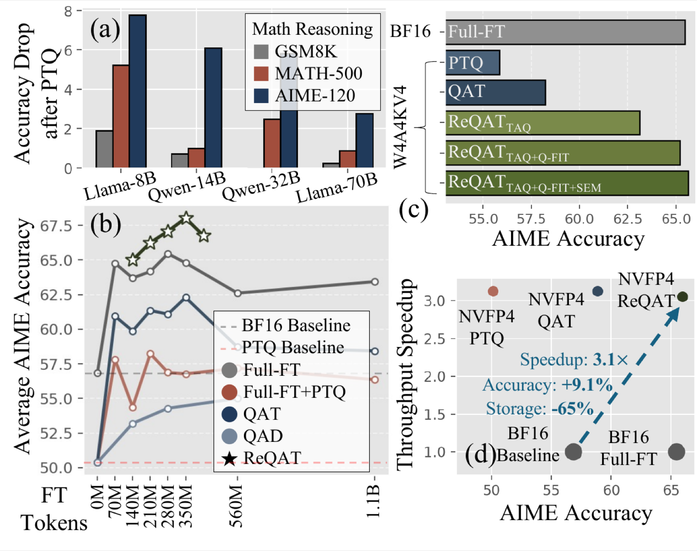
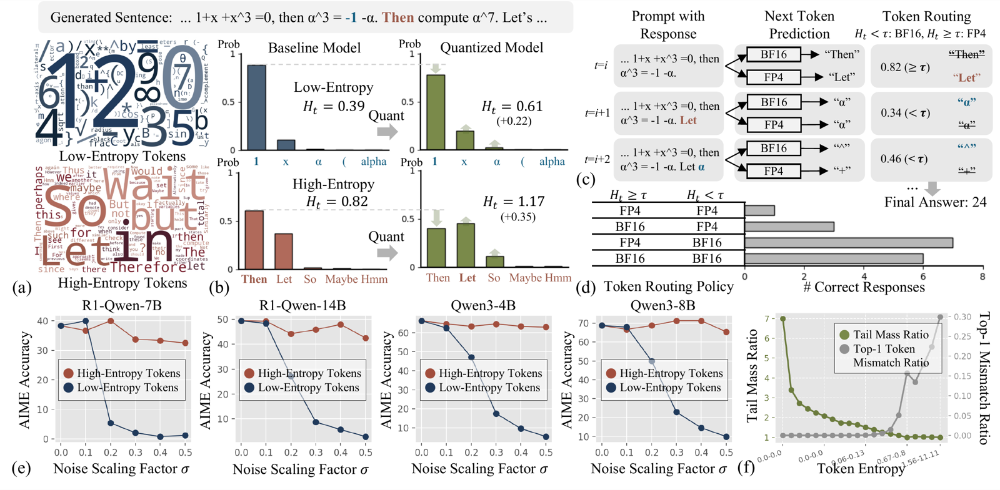
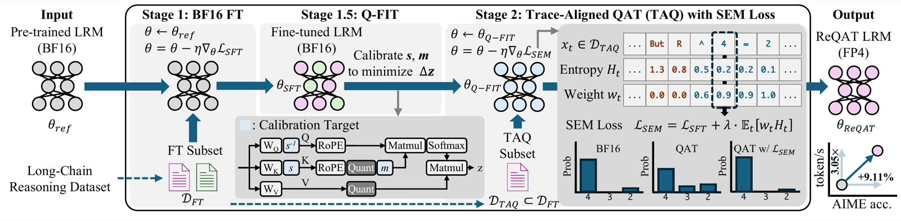
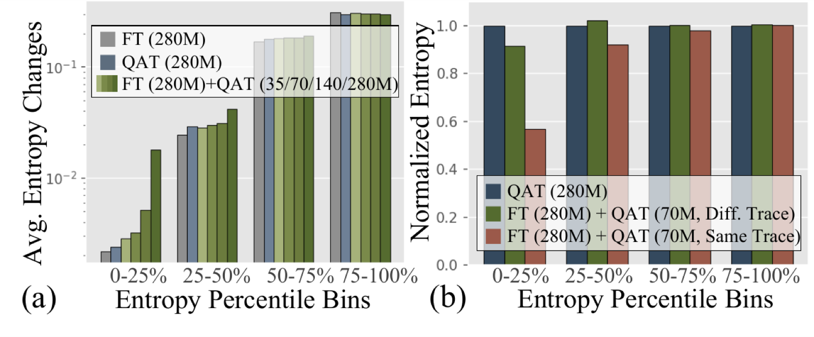
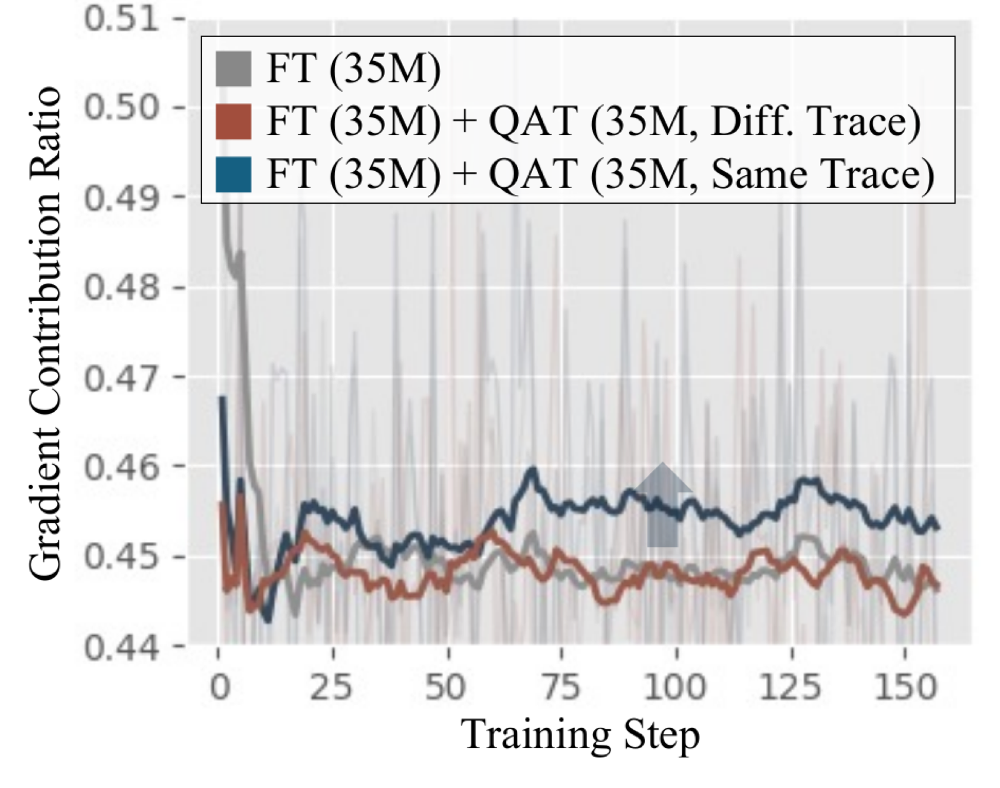
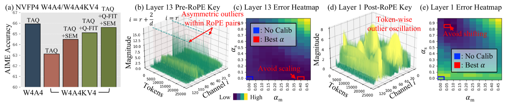
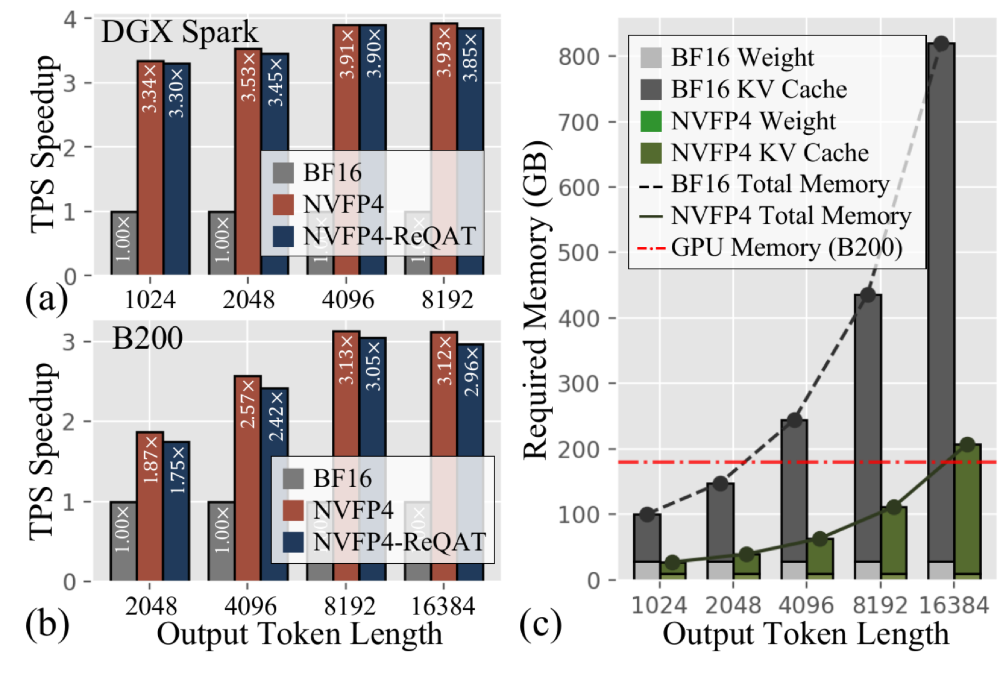

A reasoning-centric FP4 training framework that matches—and surpasses—BF16 accuracy on Large Reasoning Models, with up to 3.9× throughput on NVIDIA Blackwell.

Large Reasoning Models (LRMs) achieve strong problem-solving through long chain-of-thought, but their deployment is constrained by the high cost of full-precision inference and growing KV cache footprints. Microscaled FP4 formats enable efficient FP4 deployment; however, fully quantizing weights, activations, and KV caches (W4A4KV4) causes severe reasoning degradation that existing PTQ and QAT fail to recover. We identify that FP4 failures concentrate on low-entropy tokens—precise symbolic commitments such as digits and operators—where quantization noise inflates sampling errors that cascade through reasoning traces. Based on this insight, we propose ReQAT, a reasoning-centric FP4 training framework with three components: (i) Trace-Aligned QAT (TAQ), which revisits identical reasoning traces to focus updates on critical low-entropy decisions; (ii) Selective Entropy Minimization (SEM), which reinforces confidence at low-entropy positions; and (iii) Q‑FIT, a quantization-friendly initialization that jointly calibrates RoPE-consistent KV cache transformations to stabilize QAT. Under the same training budget, ReQAT not only recovers but surpasses BF16 fine-tuning accuracy, while delivering up to 3.9× throughput speedup on NVIDIA DGX Spark and 3.1× on B200.
Large Reasoning Models spend most of their inference budget on long chain-of-thought decoding, where repeated weight loading and a growing KV cache dominate cost. Microscaled FP4 formats (MXFP4, NVFP4) promise up to 4× peak throughput on Blackwell-class hardware, but aggressively quantizing weights, activations, and the KV cache (W4A4KV4) causes severe reasoning accuracy loss that existing post-training quantization (PTQ) and quantization-aware training (QAT) fail to recover—even when QAT is given a much larger fine-tuning token budget.
The failure concentrates on low-entropy tokens. Grouping over 1.5M generated tokens by predictive entropy, we find low-entropy tokens are dominated by digits and symbolic operators, while high-entropy tokens are connective discourse phrases. Quantization flattens the predictive distribution at both—but the consequence differs sharply. Entropy-aware mixed-precision decoding (dynamically routing each token's prediction to BF16 or FP4 based on its entropy) and a controlled logit-noise injection experiment both show the same pattern: corrupting low-entropy predictions causes large drops in AIME accuracy, while corrupting high-entropy predictions barely matters.
Digging further, FP4 rarely flips the top-1 token at low-entropy positions—the model's argmax choice is largely preserved. Instead, it substantially inflates the tail probability mass assigned to non-top-1 alternatives, making confident, precise symbolic commitments (like the digit “4” or an operator) unexpectedly easy to mis-sample during autoregressive decoding, where a single wrong digit can cascade into a fully incorrect reasoning trace.

Motivated by this insight, ReQAT explicitly targets low-entropy token failures with three complementary components, unified into a single training pipeline.

ReQAT overview. Starting from a pretrained LRM, ReQAT performs BF16 fine-tuning (Stage‑1), calibrates RoPE-consistent KV-cache transformations via Q‑FIT, then applies trace-aligned QAT (Stage‑2, TAQ) with the SEM auxiliary loss—computed on the same reasoning traces used in Stage‑1—to obtain an FP4 ReQAT model that matches or exceeds BF16 accuracy.
Using an entropy-change metric that tracks how much token entropy shifts from the base model during training, plain fine-tuning (FT) and plain QAT both induce changes mostly in high-entropy bins, leaving low-entropy bins essentially untouched. A two-stage FT + QAT procedure behaves differently: as Stage‑2 QAT proceeds, entropy changes increasingly appear in low-entropy bins—but only when Stage‑2 QAT revisits the same reasoning traces as Stage‑1. On different traces, this effect disappears.

We confirm the mechanism by tracking the gradient contribution ratio of low-entropy tokens during QAT (the fraction of total embedding-gradient norm coming from low-entropy positions). Revisiting aligned traces consistently increases this ratio relative to QAT on misaligned traces—Stage‑2 QAT reallocates learning signal toward exactly the quantization-sensitive low-entropy positions, because the model already learned the reasoning structure during Stage‑1.

Effect of trace alignment (MXFP4 W4A16, R1-Qwen-14B AIME accuracy across fine-tuning budgets).
| Method | Trace Aligned | 140M | 210M | 280M | 350M |
|---|---|---|---|---|---|
| QAT | – | 59.88 | 61.35 | 61.09 | 62.29 |
| FT + QAT | – | 60.10 | 59.89 | 62.19 | 62.60 |
| FT + QAT | ✓ | 61.15 | 63.65 | 65.00 | 67.29 |
Two-stage QAT without trace alignment gains ≤1%; trace-aligned two-stage QAT (used by TAQ) improves accuracy by about 5%.
Trace alignment alone is not enough to fully recover FP4 reasoning accuracy: it determines where Stage‑2 QAT applies updates, but not how strongly confidence at low-entropy positions is reinforced. SEM adds an auxiliary entropy-minimization term, computed per token and weighted by wt, on top of the standard SFT objective:
LSEM = LSFT + λ · (1/T) ∑t wt Ht
The natural first instinct is a hard binary mask: fully minimize entropy below a threshold τ, do nothing above it. SEM instead uses a soft, ramped weight that only reaches zero at the minibatch's minimum entropy and fades linearly up to τ (set to the 75th percentile of the minibatch's entropy):
wt = max( 0, 1 − (Ht − Hmin) / (τ − Hmin + ε) )
The difference matters in practice: a hard mask penalizes every token below τ equally hard, including borderline tokens that are only mildly confident—over-sharpening them can destabilize training. The soft ramp instead concentrates the strongest pressure on the most deterministic tokens (e.g. the digit “4”) while easing off near the threshold, which is exactly where SEM should be cautious.
Soft weighting vs. hard binary mask (AIME‑90, MXFP4 W4A4 TAQ+Q‑FIT, R1-Qwen-14B). Bold = better at each budget.
| Total Fine-Tuning Tokens | Binary Mask | Soft Weighting |
|---|---|---|
| 140M | 60.14 | 61.81 |
| 210M | 63.19 | 65.14 |
Replacing the hard mask with SEM's soft, percentile-based weighting alone is worth +1.7–2.0 points—at the same trace-aligned QAT budget.
TAQ alone largely recovers accuracy under W4A4, but performance drops sharply once the KV cache is also quantized (W4A4KV4). The challenge is that RoPE-paired channels can carry asymmetric outliers—so a single shared scaling factor is insufficient—while post-RoPE key magnitudes oscillate across tokens due to RoPE's rotational structure, making a fixed channel-wise shift suboptimal over long decoding sequences.
Q‑FIT jointly calibrates a channel-wise pre-RoPE scaling vector s (folded into projection weights, zero inference overhead) and a post-RoPE shifting vector m (fixed after calibration), selecting both by minimizing the distance between BF16 and KV4 attention outputs. Q‑FIT adapts to each layer's characteristics: where channels show asymmetric outliers with small token-wise variation, it relies mainly on shifting; where key magnitudes oscillate strongly across tokens, it relies mainly on scaling.

AIME‑120 accuracy on R1‑Qwen‑14B as the total fine-tuning budget increases. ReQATT, ReQATTQ, and ReQATTQS denote TAQ only, TAQ+Q‑FIT, and the full method (+SEM).
| Bit-Precision | Method | 140M | 210M | 280M | 350M |
|---|---|---|---|---|---|
| BF16 | Baseline | 56.83 | |||
| FT | 63.70 | 64.17 | 65.46 | 64.79 | |
| MXFP4 W4A16 | Direct PTQ | 50.37 | |||
| FT + PTQ | 54.38 | 57.71 | 56.87 | 56.77 | |
| QAT | 59.88 | 61.35 | 61.09 | 62.29 | |
| ReQATT | 61.15 | 63.65 | 65.00 | 67.29 | |
| ReQATTQ | 61.36 | 65.32 | 66.04 | 66.98 | |
| ReQATTQS | 65.00 | 66.25 | 67.08 | 68.02★ | |
| MXFP4 W4A4 | Direct PTQ | 43.96 | |||
| FT + PTQ | 45.21 | 49.17 | 49.48 | 48.33 | |
| QAT | 54.59 | 55.67 | 54.06 | 58.03 | |
| ReQATT | 56.15 | 59.79 | 59.48 | 59.69 | |
| ReQATTQ | 59.48 | 62.60 | 64.27 | 64.48 | |
| ReQATTQS | 59.69 | 62.81 | 64.48 | 65.94★ | |
| NVFP4 W4A4KV4 | Direct PTQ | 50.13 | |||
| FT + PTQ | 55.00 | 55.83 | 55.21 | 55.73 | |
| QAT | 57.09 | 57.60 | 58.86 | 58.23 | |
| ReQATT | 60.32 | 60.42 | 63.13 | 63.12 | |
| ReQATTQ | 59.79 | 63.44 | 65.94★ | 65.21 | |
| ReQATTQS | 59.79 | 64.28 | 64.37 | 65.63 | |
★ marks the best accuracy within each bit-precision setting. ReQAT improves monotonically as TAQ, Q‑FIT, and SEM are added, and matches or exceeds the best BF16 FT accuracy (65.46%) across every FP4 setting—without increasing the total training budget.
Results on R1‑Llama‑8B under NVFP4 W4A4KV4 (350M-token budget) across benchmarks. Bold = best, underline = second-best.
| Bit-Precision | Method | GSM8K | MATH‑500 | AIME‑120 |
|---|---|---|---|---|
| BF16 | Baseline | 88.49 | 90.00 | 36.67 |
| FT | 91.15 | 92.18 | 48.75 | |
| NVFP4 W4A4KV4 | Direct PTQ | 86.45 | 84.62 | 23.13 |
| FT + PTQ | 88.42 | 88.53 | 34.06 | |
| ReQATT | 89.38 | 89.80 | 38.34 | |
| ReQATTQ | 89.86 | 90.72 | 40.32 | |
| ReQATTQS | 89.85 | 90.53 | 41.85 |
On the harder AIME benchmark, SEM gives a clear additional gain (40.32→41.85), suggesting that reinforcing low-entropy confidence matters most for the hardest reasoning tasks.
We evaluate end-to-end inference throughput with trtllm-bench on two NVIDIA Blackwell platforms—DGX Spark and B200—under bursty, batched serving (1K requests, 512-token prompts, batches up to 256, 8K/16K-token generations). NVFP4 reaches up to 3.93× (DGX Spark) and 3.13× (B200) speedup over BF16; the overhead Q‑FIT adds in ReQAT is small (4–5%), still delivering up to 3.90× and 3.05× speedup.
The gains come from two factors: larger batch sizes enabled by NVFP4's smaller weight and KV-cache memory footprint, and the compute efficiency of 4-bit GEMM. At long output lengths, BF16 cannot sustain large batch sizes due to KV-cache growth, while NVFP4 maintains a batch size of 256 up to 8K tokens—directly translating memory savings into throughput.

@inproceedings{lee2026reqat,
title = {{ReQAT}: Achieving Full-Precision Reasoning Accuracy with 4-bit Floating-Point Quantization-Aware Training},
author = {Lee, Janghwan and Lee, Sihwa and Kim, Jinseok and Kim, Yongjik and Lim, Jieun and Oh, Jinwook and Choi, Jungwook},
booktitle = {Proceedings of the 42nd International Conference on Machine Learning (ICML)},
year = {2026},
eprint = {2606.15682},
archivePrefix = {arXiv}
}